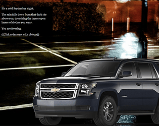
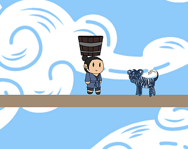
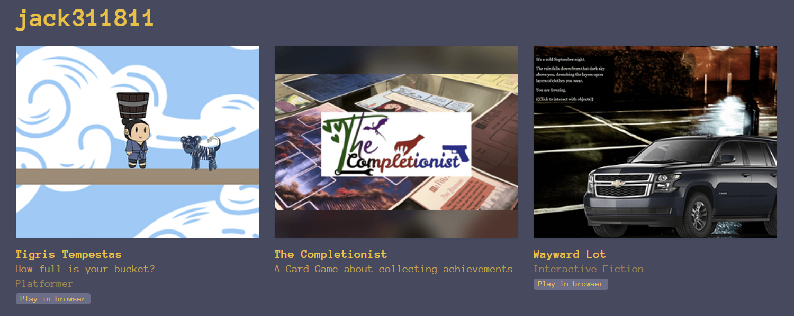
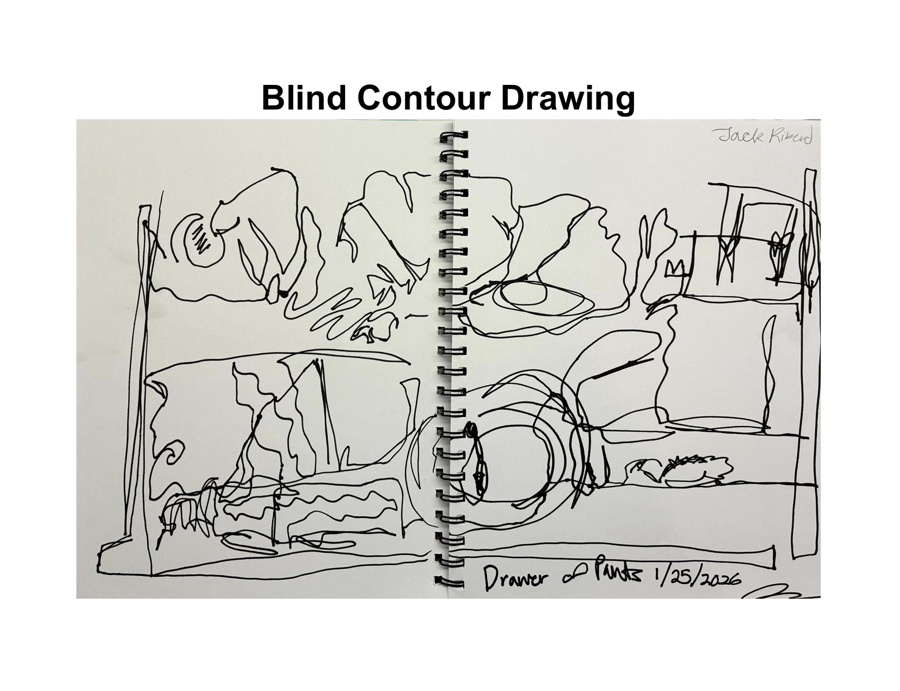
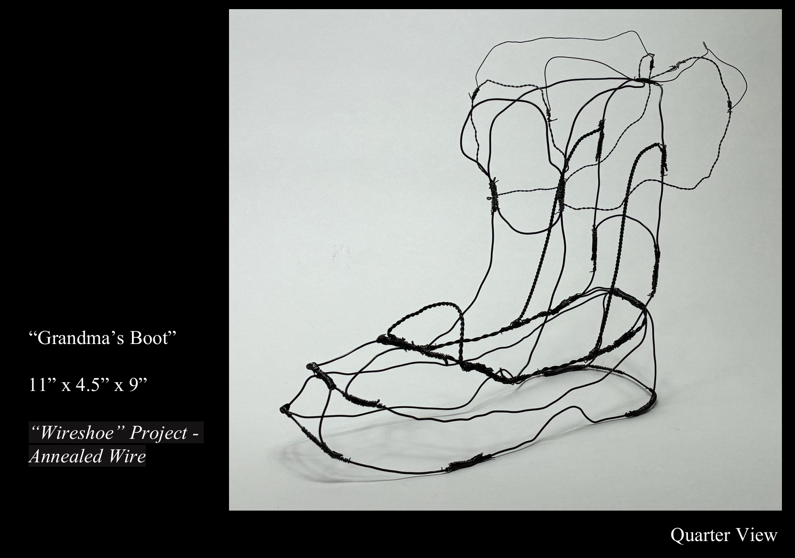

My name is Jordan Rikerd, a current student at Northern Arizona University. I'm majoring in Immersive Media & Games, expanding my knowledge of hands-on experiences and attractions. I have an extensive background in programming, receiving my Programming & Game Development Certificate at Mohave Community College. I've also received certifications in Computational Thinking, Java, Python, and Cybersecurity. I've interned at a local computer repair store called Whiz Kid Computers and I've gained experience in teaching through a Coding Day at a local elementary school.
Skills:
- Programming languages
- Java
- Javascript
- Python
- C
- Soft Skills
- Public Speaking
- Multitasking
- Problem-solving
Projects:
Wayward Lot

Lead Programmer & Developer
An interactive story made in Twine, expanding the capabilites of the program by use of images and audio to enhance the story. Narrative about mental health.
The Completionist
Click here to watch on Youtube.
Lead Game Designer & Logic Manager
Team project creating a resource-based card game. The Completionist is a multi-objective game focused on creating mini challenges to earn enough points to win the game. Includes physical decks, game boards, etc. created by our team.
Tigris Tempestas

Lead Programmer
A physics based 2D platformer surrounding a young boy returning a bucket of water to his village that must be filled with the rain. Mechanics include avoiding dropping the bucket which will spill as it hits the ground.
Education:
| Institution | Attending Dates | Major | Location | GPA |
|---|---|---|---|---|
| Lake Havasu High School | AUGUST 2021 - MAY 2025 | N/A | Lake Havasu City, AZ | 3.9 / 4.0 |
| Mohave Community College | SEPTEMBER 2022 - MAY 2025 | Programming & Game Development, Certificate | Lake Havasu City, AZ | 4.0 / 4.0 |
| Northern Arizona University | AUGUST 2025 - PRESENT | Immersive Media & Games, BS | Flagstaff, AZ | 3.580 / 4.000 |
Experience:
| Company | Employment Dates | Position | Location | Skills |
|---|---|---|---|---|
| Whiz Kid Computers | FEBRUARY 2024 - MARCH 2024 | Technician Intern | Lake Havasu City, AZ | Troubleshooting, computer set-ups |
| Chipotle Mexican Grill | OCTOBER 2024 - MAY 2025 | Crew Member | Lake Havasu City | Handling financial transactions, enforcing food safety standards, preparing orders |
Portfolios:

Click here to view all of my games on itch.io

Click here to download my Drawing Fundamentals Portfolio

Click here to download my 3D Design Portfolio